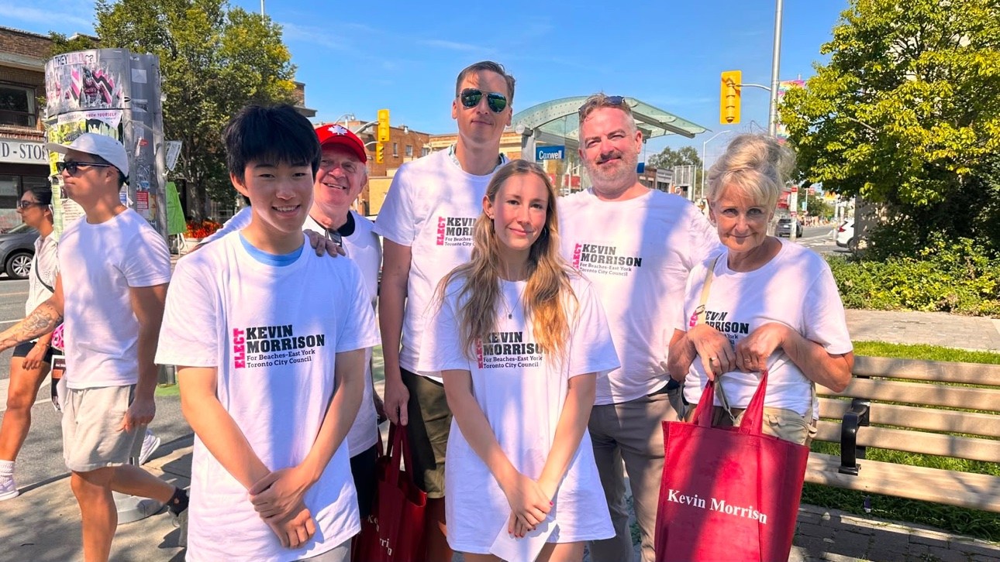
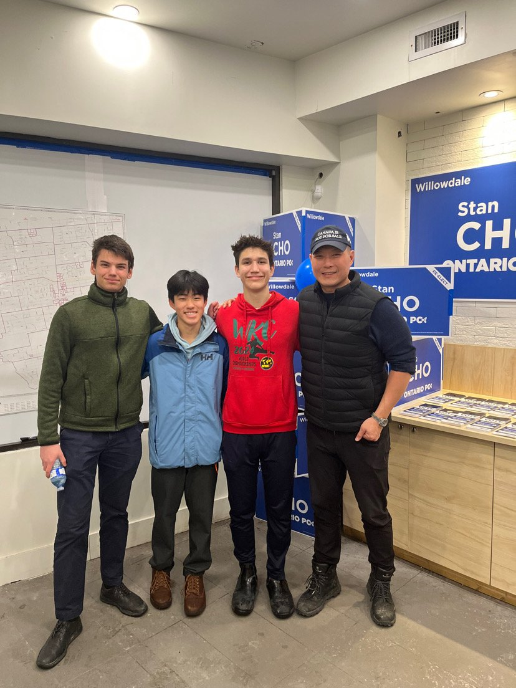
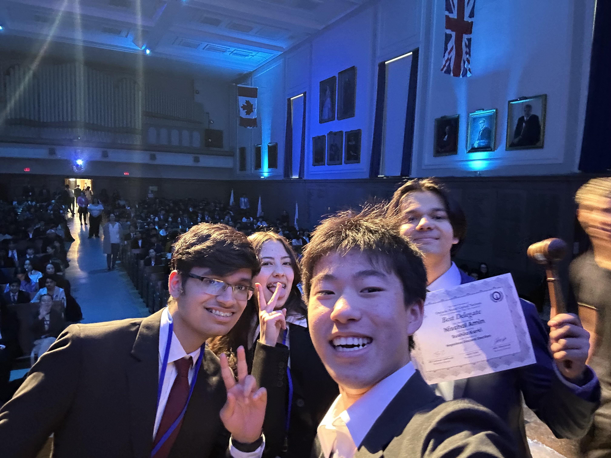

ABOUT.
Grade 11 student at St. Michael's College School in Toronto.

Outside school, I work in a constituency office, co-founded a youth book project, help on a local campaign, and do Model UN.
Since June 2025 I have worked as a special assistant at the Willowdale constituency office of the Ontario Legislative Assembly. That work covers constituent records, stakeholder research, briefing notes, community events, correspondence, and a monthly newsletter.

I co-founded the Youth Impact Network of Canada, a student-led network that connects young people with charities and practical ways to contribute. Its book work has included distribution through event tables and partner organizations, van pickups, donations to The Children's Book Bank, and a book drive that collected 1,576 books.
On the Kevin Morrison campaign in Ward 19 I help with field operations, communications, and policy research on housing affordability, food insecurity, and cost of living. I also serve as Ontario Director of Outreach and Event Coordinator for Young Politicians of Canada.
In Model UN I have directed CANMUN's UNOOSA committee, chaired TMUN's DISEC committee, and served as Club President and USG Logistics at SMCSMUN. I have also taken part in a Queen's Park internship group visit to the Niagara Falls council chamber.

At St. Michael's College School I am working toward the Ontario Secondary School Diploma, expected June 2029, with a 93% average, in the top 10% of my class. Advanced coursework includes AP World History and AP Biology.
Awards include 3rd Place at OxfordMUN Canada (top 6 of approximately 70 delegates in committee), 3rd Place at OMUN, and 3rd Place at HCMUN.
Skills include Microsoft Excel, Qomon CRM, Help Scout, QGIS, Google Workspace, Apps Script, public speaking, policy research, and stakeholder outreach.
My research interests are political communication, public administration, and municipal policy. This site is a record of that work. It will change as the work changes.